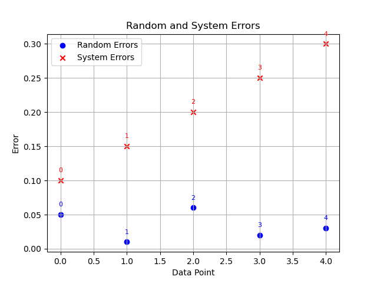

Welcome to B-Consortium AS/A Level Physics, Ladies and Gentleman, (Zainematics would probably say: Hey babies, let's learn Meth). My name is Aitzaz Imtiaz... if you probably opened my work accidentally. I am just a demb guy (genuine claim: I am a published author in computational research at Harvard DataVerse backed by Harvard College), eh, call me emo cz why not. Apart from the ruined professional mess, you can learn more about me on my homepage here. Warning: Guyz do net open ut... I am an ugly nerd.
Let's maintain professional stuff now
Physical Quantities
Uncertainities
Let us denote a system $y$ such that it is a measurable physical quantity. It cannot be always measured in a fixed value, due to limitations. Assume $x$ to be the size of such quantity, to approach a specific value, we go:
$$\lim_{x \to a} a = a,$$
where we agree that certain limitations exist. Such trivial errors arise in nature because of errors ranging in the domain of Accuracy and Precision. In detailed analysis:
| Criteria |
Accuracy |
Precision |
| Definition |
Measure of how close a measurement is to the true or expected value. |
Measure of how consistent and exact a measurement or result is. |
| Focus |
Focuses on the overall correctness of a measurement or classification. |
Focuses on the ability to make precise and consistent measurements or classifications. |
| Formula |
(True Positives + True Negatives) / Total Predictions |
True Positives / (True Positives + False Positives) |
| Example |
Out of 100 predictions, 90 are correct. |
Out of 100 positive predictions, 85 are actually positive. |
Here, we recognize that such domains can produce the range of following errors in analysis:
| Criteria |
Random Error |
Systematic Error |
| Definition |
Unpredictable variations or fluctuations in measurements due to various uncontrollable factors. |
Consistent and predictable deviations from the true or expected value in measurements. |
| Origin |
Arises from random and uncontrollable sources such as environmental conditions, equipment limitations, and human error. |
Arises from consistent and identifiable sources, often related to flaws in the measurement system or calibration. |
| Impact |
Can cause measurements to scatter around the true value, with some measurements above and some below. |
Leads to a consistent bias or offset in measurements, consistently shifting results in one direction. |
| Reducibility |
Can be reduced through statistical methods by increasing the number of measurements and taking the average. |
Can only be reduced by identifying and correcting the underlying systematic issue in the measurement process. |
Based on these definitions, we can set for a random experiment, a graph that crucially shows the difference between Random and System errors on graph plot:

We study for now random errors, as fixing system errors needs recalibration of the model. Assume the total summable change of uncertainties for the system $y$ to cause a random error (also referred to as causation of absolute error, raw uncertainty, and precision). In this case:
$$x+\sum \lim_{x \to a} a \approx y,$$
This will imply the fact that:
$$\Delta y = x \pm \delta x$$
where it is true that:
$$\delta x = \sum \lim_{x \to a} a,$$
We can derive further non-trivial results, from the fact that:
$$\frac{dy}{dx}=\frac{\delta y}{\delta x} \wedge \delta x = \frac{1}{\frac{dy}{dx}}\delta y,$$
but this will stretch the content outside of the syllabus. Remaining in the syllabus, we denote $F_{y}$ as Fractional Uncertainty. We can denote $P_{y}$ as Percentage Uncertainty. We can work out as:
$$F_{y}=\frac{\delta x}{x}$$
$$P_{y}=F_{y}.100\%,$$
From this, we can derive further:
$$\Delta y_{1} \cdot \Delta y_{2} = (x_{1} \cdot x_{2}) \pm \sum P_{y},$$
$$\frac{\Delta y_{1}}{\Delta y_{2}}=\bigg(\frac{x_{1}}{x_{2}} \pm \sum P_{y}\bigg),$$
For finding $\Delta y^n_1$ we can derive:$
$$\Delta y^n_1 = x^n_1 \pm \bigg(n\% \cdot \frac{\delta x_1}{x_1}\bigg),$$
Scalars and Vectors
Scalar Quantity
A scalar quantity is represented by a single numerical value without any direction. It only has magnitude and is often denoted by regular variables.
Examples of scalar quantities include:
- Mass (\( m \))
- Temperature (\( T \))
- Speed (\( v \))
- Energy (\( E \))
Vector Quantity
A vector quantity is represented by both magnitude and direction. It is typically denoted using bold letters or arrows.
Examples of vector quantities include:
- Force (\( \mathbf{F} \))
- Velocity (\( \mathbf{v} \))
- Displacement (\( \mathbf{d} \))
- Momentum (\( \mathbf{p} \))
Solving Vectors Using Pythagoras Theorem
- Understand the Problem: Understand the problem and what you're trying to solve.
- Resolve Vectors: If necessary, resolve vectors into their rectangular components.
- Apply Pythagoras Theorem: Use the Pythagoras theorem to find the magnitude of the resultant vector:
\[ |R| = \sqrt{|A|^2 + |B|^2} \]
- Calculate Angle: To find the angle (θ) between the resultant vector and one of the original vectors, use trigonometry:
\[ \theta = \arctan\left(\frac{|B|}{|A|}\right) \]
- Apply Direction: Provide both magnitude and direction of the resultant vector.
Solving Vectors Using Scale Drawing
- Understand the Problem: Understand the problem and what you're trying to solve.
- Draw a Scale Diagram: Create a scale drawing of the vectors on a piece of paper.
- Vector Addition: Draw the vectors according to scale and direction.
- Find the Resultant: Measure the length of the resultant vector in the diagram.
- Measure the Angle: Use a protractor to measure the angle θ.
- Write Down the Result: Specify the magnitude and direction of the resultant vector.
Reference
Title: Physical Quantities and Units
Author: physicsandmathstutor